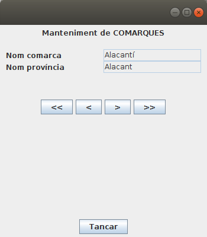

6 - JDBC avançat¶
JDBC disposa d’una alta funcionalitat i estructures que poden ajudar-nos a incrementar la qualitat de les aplicacions que construïm.
La primera és poder accedir no a les dades, sinó a les estructures de les dades, és a dir, l'estructura de les taules o de les consultes que fem: noms de les columnes, tipus, etc. En definitiva és accedir a les Metadades.
També seria convenient construir aplicacions flexibles, robustes i eficients. Necessitarem, doncs, un bon tractament d’errors que trasllade quan faça falta la informació adequada a l’usuari o reconduint el flux de l’execució cap a processos que interpreten i compensen els errors.
L’eficiència és també una característica important de la qualitat. En general, els Sistemes Gestors de Bases de Dades disposen de mecanismes automàtics per potenciar l’eficiència de les peticions, com ara l’ús de memòria caché d’accés ràpid, la creació d’índexs automàtics, etc. Aquestos automatismes responen a determinats patrons a l’hora de fer les peticions. Per això JDBC preveu altres formes, diferents a les estudiades fins ara, per realitzar peticions que milloren el rendiment.
6.1 - Accés a les Meta Dades¶
Normalment quan accedim a una Base de Dades des d'un programa Java, coneixerem l'estructura d'aquesta Base de Dades, és a dir, les taules que té i cada taula quins camps i de quin tipus són. I fins i tot les claus externes entre les taules.
Però podria passar que no coneguérem aquesta estructura. Això no hauria de ser un problema per accedir a la Base de Dades, ja que aquesta és autodescriptiva, és a dir, que hem de poder consultar a la Base de Dades per a que ens diga la seua estructura.
L'objecte que ens dóna aquesta informació és el DatabaseMetaData. Disposa de molts mètodes que ens proporcionen gran quantitat d'informació.
I també ens dóna informació un altre objecte, ResultSetMetaData , que obtindrà la informació a partir d'un ResultSet. Veurem els dos per separat.
DatabaseMetaData
És l'adequat quan volem veure les taules i vistes que tenim en la Base de Dades, així com l'estructura de cadascuna d'elles.
Mirem primer els mètodes més interessants que té:
| Valor tornat | Nom del mètode | Descripció |
|---|---|---|
| String | getDatabaseProductName() | Torna el nom del SGBD |
| String | getDriverName() | Torna el driver JDBC utilitzat |
| String | getURL() | Torna la URL de la connexió |
| String | getUserName() | Torna el nom de l'usuari que s'ha connectat |
| ResultSet | getTables(cataleg, esquema, nom, tipus) | Torna informació de totes les taules que coincideixen amb els patrons o criteris. Si posem null a tots els paràmetres ens tornarà totes les taules i vistes |
| ResultSet | getColumns(cataleg, esquema, nom, nom_colu) | Torna informació de les columnes de la taula especificada en el tercer paràmetre (que està en el catàleg i en l'esquema, si els posem). El quart paràmetre servirà per a seleccionar les columnes que coincidesquen amb el patró (null per a totes) |
| ResultSet | getPrimaryKeys(cataleg, esquema, taula) | Torna la llista de camps que formen la clau principal |
| ResultSet | getImportedKeys(cataleg, esquema, taula) | Torna una llista amb les claus externes definides en aquesta taula |
| ResultSet | getExportedKeys(cataleg, esquema, taula) | Torna una llista amb les claus externes que apunten a aquesta taula |
Per poder comprovar tot l'anterior, farem un programa que ens done informació de la Base de Dades, una relació de les taules i vistes que té.
Posteriorment acceptarà un número, i traurà la informació de la taula corresponent amb aquest format: columnes, tipus, clau principal, claus externes.
Copieu elsegüent codi en un fitxer Kotlin anomenat Exemple_4_31_MetaData.kt :
package exemples
import java.sql.DriverManager
import java.io.BufferedReader
import java.io.InputStreamReader
fun main(args: Array<String>) {
val con = DriverManager.getConnection ("jdbc:postgresql://89.36.214.106:5432/geo_ad", "geo_ad", "geo_ad")
val dbmd = con.getMetaData ()
println("Informació general")
println("------------------")
println("SGBD " + dbmd.getDatabaseProductName())
println("Driver " + dbmd.getDriverName())
println("URL " + dbmd.getURL())
println("Usuari " + dbmd.getUserName())
println()
println("Llistat de taules")
println(String.format("%-6s %-7s %-7s %-10s %-10s", "Número", "Catàleg", "Esquema", "Nom", "Tipus"))
println("---------------------------------------------")
val ll = dbmd.getTables(null, "public", null, null)
var compt = 1
val taules = ArrayList<String>()
while (ll.next()) {
println(String.format("%-6d %-7s %-7s %-10s %-10s",(compt++),ll.getString(1),ll.getString(2),ll.getString(3),ll.getString(4)))
taules.add(ll.getString(3))
}
println()
println("Introdueix un número per veure l'estructura de la taula (0 per acabar) ")
val ent = BufferedReader(InputStreamReader (System.`in`))
var opcio = Integer.parseInt(ent.readLine())
while (opcio != 0) {
if (opcio < compt && opcio > 0) {
val taula = dbmd.getTables (null, "public", taules.get(opcio-1), null)
if (taula.next()) {
if (taula.getString(4).equals("TABLE")) {
val rs = dbmd.getColumns (null, "public", taules.get(opcio-1), null)
println("Estructura de la taula " + taules.get(opcio - 1))
println("----------------------------")
while (rs.next())
println(rs.getString(4) + " (" + rs.getString(6) + ")")
println("----------------------------")
val rs2 = dbmd.getPrimaryKeys(null, "public", taules.get(opcio - 1))
print("Clau principal ")
while (rs2.next())
print(rs2.getString(4) + " ")
println()
val rs3 = dbmd.getImportedKeys(null, "public", taules.get(opcio - 1))
println("Claus externes ")
while (rs3.next()) {
println(rs3.getString(8) + " apunta a " + rs3.getString(3))
}
rs.close()
rs2.close()
rs3.close()
}
}
taula.close()
}
println()
println("Introdueix un número per veure l'estructura de la taula (0 per acabar) ")
opcio = Integer.parseInt(ent.readLine())
}
ll.close()
con.close()
}
ResultSetMetaData
Una vegada executada una sentència SELECT de SQL que ja tenim el resultat en un ResultSet, podem accedir també a meta dades d'aquest ResultSet, obtenint per exemple el número de columnes, o el tipus de les columnes. Ho obtenim per mig del ResulSetMetaData.
Només veurem 3 mètodes
| Valor tornat | Nom del mètode | Descripció |
|---|---|---|
| int | getColumnCount() | Torna el número de columnes del ResultSet |
| String | getColumnName(index) | Torna el nom de la columna (la primera columna és la 1) |
| String | getColumnTypeName(index) | Torna el tipus de la columna |
El següent exemple és una modificació del programa anterior, on ara traurem tot el contingut d'una taula per mig de la sentència SELECT * FROM taula. Intentarem donar-li un aspecte tabular, però sense patir molt per l'aspecte.
Copieu el següent codi en un fitxer Kotlin anomenat Exemple_4_32_ResultSetMetaData.kt :
package exemples
import java.sql.DriverManager
import java.io.BufferedReader
import java.io.InputStreamReader
fun main(args: Array<String>) {
val con = DriverManager.getConnection("jdbc:postgresql://89.36.214.106:5432/geo_ad", "geo_ad", "geo_ad")
val dbmd = con.getMetaData()
println("Llistat de taules:")
println(String.format("%-6s %-7s %-7s %-10s %-10s", "Número", "Catàleg", "Esquema", "Nom", "Tipus"))
println("---------------------------------------------")
val ll = dbmd.getTables(null, "public", null, null)
var compt = 1
val taules = ArrayList<String>()
while (ll.next()) {
println(String.format("%-6d %-7s %-7s %-10s %-10s",(compt++),ll.getString(1),ll.getString(2),
ll.getString(3),ll.getString(4)))
taules.add(ll.getString(3))
}
println()
println("Introdueix un número per veure el contingut de la taula (0 per acabar): ")
val ent = BufferedReader(InputStreamReader(System.`in`))
var opcio = Integer.parseInt(ent.readLine())
while (opcio != 0) {
if (opcio < compt && opcio > 0) {
val taula = dbmd.getTables(null, "public", taules.get(opcio - 1), null)
if (taula.next()) {
if (taula.getString(4).equals("TABLE")) {
val rs = con.createStatement().executeQuery("SELECT * FROM " + taules.get(opcio - 1) + " ORDER BY 1")
println("Contingut de la taula " + taules.get(opcio - 1))
println("----------------------------")
val rsmd = rs.getMetaData()
for (i in 1..rsmd.getColumnCount())
print(String.format("%-20.20s", rsmd.getColumnName(i)))
println()
println("------------------------------------------")
while (rs.next()) {
for (i in 1..rsmd.getColumnCount())
print(String.format("%-20.20s ", rs.getString(i)))
println()
}
rs.close()
}
}
taula.close()
}
println()
println("Introdueix un número per veure el contingut de la taula (0 per acabar): ")
opcio = Integer.parseInt(ent.readLine())
}
ll.close()
con.close()
}
6.2 - ResultSets que poden avançar cap avant i cap arrere¶
Fins el moment, tots els ResultSet que hem creat podien avançar únicament cap avant, fent un recorregut seqüencial de les dades.
- Inicialment el punter que apunta a l'estructura està situat abans de la primera fila
- En fer next() se situa a la següent fila (la primera vegada se situa en la primera fila)
- Quan estiguem situats en l'última fima, si fem next() se situara després de l'última, i ho indicarà tornant false
Però aquesta manera de funcionar, que es diu TYPE_FORWARD_ONLY i que és l'opció per defecte per a obrir un ResultSet, no és l'única. Aquestos són els tipus de ResultSet que hi ha:
- TYPE_FORWARD_ONLY : és el tipus utilitzat fins el moment, i és el tipus per defecte. El ResultSet només pot avançar cap avant.
- TYPE_SCROLL_INSENSITIVE : El ResultSet pot avançar cap avant i cap arrere, fins i tot pot anar a una posició absoluta (directament, sense passar per les anteriors). El ResultSet no és sensible als canvis fets en les dades que han proporcionat aquest resultat, és a dir, ens mostra les dades que hi havia en el moment d'executar la consulta, sense poder mostrar possibles canvis posteriors.
- TYPE_SCROLL_SENSITIVE : Igual que l'anterior en quant al moviment. Però ara sí que és capaç de mostrar possibles canvies fets en les dades originals posteriors al moment de l'execució de la consulta, mentre el ResultSet estiga obert.
I per una altra banda el ResultSet pot tenir la possibilitat d'actualitzar les dades originals. Des d'aquest punt de vista hi ha 2 possibles tipus:
- CONCUR_READ_ONLY : El ResultSet només és de lectura i no es pot actualitzar
- CONCUR_UPDATABLE : El ResultSet es pot actualitzar (i els canvis es reflectiran en les dades originals) utilitzant el mateix ResultSet
L'opció per defecte és CONCUR_READ_ONLY
Realment on declararem els tipus és en la creació del STATEMENT a partir del qual crearem la sentència que omplirà el ResultSet. És lògic, ja que aquestes maneres de funcionar s'han de preparar abans d'executar la sentència. Fins ara no havíem posat paràmetres en la creació del Statement , cosa que fa que es cree amb les opcions per defecte. Si volem altres opcions:
val st =con.createStatement(ResultSet.TYPE_SCROLL_INSENSITIVE,ResultSet.CONCUR_READ_ONLY)
val st =con.createStatement(ResultSet.TYPE_SCROLL_SENSITIVE,ResultSet.CONCUR_UPDATABLE)
La primera qüestió que hem de comentar és que el SGBD ha de ser capaç de suportar els tipus que no són per defecte, i no sempre és així. Mentre que PostgreSQL , Oracle i MySQL sí que són capaços de suportar tots els tipus anteriors, SQLite no ho pot fer i tan sols suporta TYPE_FORWARD_ONLY i CONCUR_READ_ONLY , com era d'esperar.
Deixant de banda la possibilitat de reflectir els possibles canvis de les dades originals (SENSITIVE), i de poder actualitzar-les (CONCUR_UPDATABLE), anem a estudiar els possibles moviments dins del ResultSet.
- next : Avança una fila cap avant. Torna true si s'ha pogut posicionar, i false si no s'ha pogut posicionar, per estar després de l'última fila.
- previous : Avança una fila cap arrere. Torna true si s'ha pogut posicionar, i false si no s'ha pogut posicionar, per estar abans de la primera fila.
- first : Se situa en la primera fila. Torna true si s'ha pogut posicionar, i false si no s'ha pogut posicionar, per no contenir el ResultSet cap fila.
- last: : Se situa en l'última fila. Torna true si s'ha pogut posicionar, i false si no s'ha pogut posicionar, per no contenir el ResultSet cap fila.
- beforeFirst : Se situa al principi del RecordSet, abans de la primera fila. Si no hi havia cap fila, no fa res.
- afterLast : Se situa al final del RecordSet, després de l'última fila. Si no hi havia cap fila, no fa res.
- relative(int files): Meneja el cursor respecte de la posició actual, tantes files com s'indica en el paràmetre (si el paràmetre és negatiu, anirà cap arrere).
- absolute(int fila): Situa el cursor en la fila especificada en el paràmetre (1 és la primera)
El següent exemple es practica anar a la primera, a l'anterior, a la següent i a l'última fila.
Copieu el següent codi en un fitxer Kotlin anomenat Exemple_4_41_Scroll.kt :
package exemples
import javax.swing.JFrame
import javax.swing.JLabel
import javax.swing.JTextField
import javax.swing.JButton
import javax.swing.JPanel
import java.awt.FlowLayout
import java.awt.GridLayout
import java.awt.BorderLayout
import java.awt.EventQueue
import java.sql.DriverManager
import java.sql.ResultSet
class Exemple_4_41_Scroll : JFrame() {
val nomComarca = JTextField()
val nomProvincia = JTextField()
val primer = JButton("<<")
val anterior = JButton("<")
val seguent = JButton(">")
val ultim = JButton(">>")
val tancar = JButton("Tancar")
val pDalt = JPanel(FlowLayout())
val pCentre = JPanel(GridLayout(8, 0))
val pDades = JPanel(GridLayout(2, 2))
val pBotonsMov = JPanel(FlowLayout())
val pTancar = JPanel(FlowLayout())
val con = DriverManager.getConnection("jdbc:postgresql://89.36.214.106:5432/geo_ad", "geo_ad", "geo_ad")
val st = con.createStatement(ResultSet.TYPE_SCROLL_INSENSITIVE, ResultSet.CONCUR_READ_ONLY)
val rs = st.executeQuery("SELECT * FROM COMARCA ORDER BY 1")
init {
defaultCloseOperation = JFrame.EXIT_ON_CLOSE
setBounds(100, 100, 350, 400)
setLayout(BorderLayout())
getContentPane().add(pCentre, BorderLayout.CENTER)
getContentPane().add(JPanel(FlowLayout()), BorderLayout.WEST)
getContentPane().add(JPanel(FlowLayout()), BorderLayout.EAST)
getContentPane().add(pTancar, BorderLayout.SOUTH)
pDalt.add(JLabel("Manteniment de COMARQUES"))
pCentre.add(pDalt)
pDades.add(JLabel("Nom comarca"))
pDades.add(nomComarca)
pDades.add(JLabel("Nom província"))
pDades.add(nomProvincia)
pCentre.add(pDades)
nomComarca.setEditable(false)
nomProvincia.setEditable(false)
pCentre.add(JPanel(FlowLayout()))
pBotonsMov.add(primer)
pBotonsMov.add(anterior)
pBotonsMov.add(seguent)
pBotonsMov.add(ultim)
pCentre.add(pBotonsMov)
pTancar.add(tancar)
rs.first()
visComarca()
primer.addActionListener {
rs.first()
visComarca()
}
anterior.addActionListener {
if (!rs.isFirst())
rs.previous()
visComarca()
}
seguent.addActionListener {
if (!rs.isLast())
rs.next()
visComarca()
}
ultim.addActionListener {
rs.last()
visComarca()
}
tancar.addActionListener{
rs.close()
st.close()
con.close()
System.exit(0)
}
}
fun visComarca() {
nomComarca.setText(rs.getString(1))
nomProvincia.setText(rs.getString(2))
}
}
fun main(args: Array<String>) {
EventQueue.invokeLater({ Exemple_4_41_Scroll().isVisible = true })
}
Aquest és el resultat:

6.3 - Tractament d'errors en aplicacions JDBC¶
L’execució de sentències SQL està sotmesa a molts de factors que poden provocar algun error. Pot passar que la connexió falle, que el controlador no siga l’adequat, que les sentències tinguen errades, que el SGBD no suporte la sentència, i un llarg etcètera de possibilitats.
Nota
Podeu trobar informació referida als codis de SQLSTATE en la wikipedia, en aquest enllaç. El codi SQLSTATE està format per cinc caràcters. Els dos primers indiquen la tipologia de l’error i els tres últims el concreten.
Els errors SQL es troben molt ben definits a l’especificació estàndard, la qual descriu el valor de la variable anomenada SQLSTATE , que identifica l’estat d’una sentència SQL immediatament després de la seua execució. Quan JDBC detecta que després d’una execució el valor d’aquesta variable es correspon a un error, dispara una excepció de tipus SQLException la qual, a més de contenir un missatge clarificador, incorpora el valor del SQLSATE. Podem recuperar aquest valor amb el mètode getSQLState().
L’ús de try-catch ens permetrà capturar específicament excepcions SQLException o derivades. Una vegada capturades, utilitzarem el codi SQLSTATE per decidir com cal actuar.
Un altre mètode molt útil és getMessage() que torna una cadena amb l'error produït. Pot servir perfectament per a la resta d'errors no tractats, ja que amb aquest missatge sempre donarem una pista, encara que no personalitzada com abans.
Imaginem, per exemple, que en intentar connectar amb un SGBD capturem una excepció SQL amb el valor SQLState igual a 28000. Si consulteu aquest codi a la pàgina que us indiquem en la nota de dalt veureu que el valor 28000 correspon a un error en l’autenticació. En canvi, si el codi rebut haguera estat 08001 significaria que JDBC està trobant problemes de xarxa a l’hora de connectar, ja siguen deguts a una desconnexió física, o simplement a un host o adreça IP desconegut.
Nota
PostgreSQL defineix millor l'error d'autenticació. En el cas de PostgreSQL és el 28P01. Per tant hauríem de substituir per aquest valor en el programa posterior si volem connectar a ell. La taula d'errors de PostgreSQL la podeu trobar en aquest enllaç
No cal informar detalladament l’usuari de tots i cadascun dels possibles errors, però sí que cal decidir quins errors requeriran un tractament específic i quins no. Segurament no seria mala idea, si detectem un SQLState de valor 08001 , aconsellar l’usuari que abans de trucar al servei tècnic revise les connexions de xarxa o s’assegure que el SGBD es troba en marxa.
D’altra banda, la detecció precisa del SQLState ens pot també permetre realitzar accions per reconduir l’error. Imaginem, per exemple, que per raons de seguretat l’administrador del SGBD va canviant de contrasenya. L’administrador tria una contrasenya a l’atzar d’entre un conjunt de tres o quatre prefixades. Per tal de no haver d’estar contínuament configurant la nostra aplicació cada vegada que canvie la contrasenya, podem implementar una utilitat que accepte un conjunt de tres o quatre contrasenyes de manera que puga anar provant d’una en una quan reba un error d’autenticació.
Per a la resta d'errors, podem avisar a l'usuari de l'error que s'ha produït, o podem utilitzar una altra tècnica, que és utilitzar enregistradors. Els enregistradors (loggers) van guardant automàticament en un fitxer les coses que van succeint.
Vegem un possible exemple on posem en pràctica totes les consideracions que acabem de comentar. Està fet sobre MySQL , ja que com hem comentat abans, PostgreSQL utilitza ara un altre codi d'error per a la contrasenya invàlida. Tindrem 3 contrasenyes possibles per a la connexió. Si qualsevol de les 3 és bona, es connectarà. Sinó indicarà que hi ha un error en la contrasenya.
Copieu el següent codi en un fitxer Kotlin anomenat Exemple_4_51_TractamentErrors.kt :
package exemples
import java.sql.Connection
import java.sql.DriverManager
import java.sql.SQLException
fun main(args: Array<String>) {
var connectat = false
var con: Connection? = null
println("tractamentErrorConnexio()")
try {
val url = "jdbc:postgresql://89.36.214.106:5432/geo_ad"
val usuari = "geo_ad"
val contrasenyes = arrayOf("geo0", "geo1", "geo_ad")
for (i in 0 until contrasenyes.size) {
try {
con = DriverManager.getConnection(url, usuari, contrasenyes[i])
connectat = true
break
} catch (ex: SQLException) {
if (!ex.getSQLState().equals("28P01")) {
// NO és un error d'autenticació
throw ex
}
}
}
if (connectat)
println("Connexió efectuada correctament")
else
println("Error en la contrasenya")
} catch (ex: SQLException) {
if (ex.getSQLState().equals("08001")) {
println(
"S'ha detectat un problema de connexió. Reviseu els cables de xarxa i assegureu-vos que el SGBD està operatiu."
+ " Si continua sense connectar, aviseu el servei tècnic"
)
} else {
println(
"S'ha produït un error inesperat. Truqueu al servei tècnic indicant el següent codi d'error SQL:"
+ ex.getSQLState()
)
}
} catch (ex: ClassNotFoundException) {
println("No s'ha trobat el controlador JDBC (" + ex.message + "). Truqueu al servei tècnic")
} finally {
try {
if (con != null && !con.isClosed()) {
con.close()
}
} catch (ex: SQLException) {
throw ex
}
}
}
6.4 - Transaccions¶
Una transacció és un conjunt de sentències SQL d'actualització (INSERT, DELETE, UPDATE) que o bé s'executen totes o bé no s'executa ninguna.
La manera de confirmar les sentències és amb COMMIT , i la manera de rebutjar-les totes és ROLLBACK (quedant l'estat com estava abans de començar la transacció). En qualsevol dels dos casos, després d'executar les sentències de control COMMIT o ROLLBACK , començarà una transacció nova.
JDBC trasllada també aquest metodologia al seu API. Per defecte, les connexions JDBC consideren que cada objecte Statement és en si mateix una transacció. Abans de cada execució es demana l’inici d’una transacció i al final, si l’execució té èxit, s’envia un commit i si no té èxit, un rollback. Per això diem que la connexió actua en mode autocommit.
Però hi ha una altra manera de funcionar. Els Statements poden treballar sense automatitzar el commit després de cada execució, canviant la connexió de mode amb el mètode setAutoCommit(false).
A partir d’aleshores es consideraran instruccions d’una mateixa transacció totes les sentències executades entre dues cridades als mètodes commit o rollback(equivalents JDBC de les instruccions COMMIT i ROLLBACK de SQL).
A continuació tenim un programa en el qual fem una sèrie de canvis (una modificació de files i un esborrat) però després fem un rollback, i per tant no s'haurà fet cap de les actualitzacions. És sobre la Base de Dades de SQLite Empleats,sqlite , que només tenia la taula EMPLEAT. Per a mostrar que estem fent els canvis, però que després ls desfem amb rollback , mostrem un resum en el qual senzillament indiquem el número d'empleat i el total dels sous.
Prèviament ens guardem el estat que tenia l'autocommit , i després el desactivem. Quan finalitza tot el procés posem autocommit com estava en un principi.
Copieu el següent codi en un fitxer Kotlin anomenat Exemple_4_61_Transaccions.kt :
package exemples
import java.sql.DriverManager
import java.sql.Connection
fun main(args: Array<String>) {
val con = DriverManager.getConnection("jdbc:sqlite:Empleats.sqlite")
resumEmpleats(con) // estat inicial
val autocommit = con.getAutoCommit()
con.setAutoCommit(false)
val st = con.createStatement()
st.executeUpdate("UPDATE EMPLEAT SET sou = sou * 1.05")
st.executeUpdate("DELETE FROM EMPLEAT WHERE depart=10")
resumEmpleats(con) // s'han modificat els sous i s'han esborrat dos empleats
con.rollback() // desfem els canvis
resumEmpleats(con) // hem tornat a l'estat inicial:
// no s'ha fet ni l'actualització de sous ni l'esborrat d'empleats
con.setAutoCommit(autocommit)
con.close()
}
fun resumEmpleats(c: Connection) { // En el resum traurem el número d'empleats i el total de sous
val st = c.createStatement()
val rs = st.executeQuery("SELECT COUNT(*), SUM(sou) FROM EMPLEAT")
rs.next()
println("Actualment hi ha " + rs.getInt(1) + " empleats que cobren un total de " + rs.getDouble(2) + " €")
rs.close()
st.close()
}
La major part de SGBD permeten utilitzar transaccions explícites amb qualsevol instrucció SQL, fins i tot alguns SGBD també en sentències DDL (data definition language) com CREATE TABLE, etc . Les sentències de definició modifiquen directament l’estructura de les dades i, per tant, cal anar molt en compte perquè poden provocar danys importants, pèrdues de dades existents, etc.
Però hi ha alguns SGBD com Oracle que no suporten la revocació de sentències DDL i en cas d’executar rollback , obtindrem un error indicant que les sentències DDL no es poden revocar.
6.5 - Millora de rendiment¶
Un altre aspecte important que mesura la qualitat de les aplicacions és l’eficiència amb la qual s’aconsegueix comunicar amb el SGBD. Per optimitzar la connexió és important reconèixer quins processos poden actuar de coll d’ampolla.
En primer lloc, analitzarem la petició de connexió a un SGBD perquè es tracta d’un procés costós però inevitable que cal considerar.
En segon lloc, estudiarem les sentències predefinides, perquè el seu ús facilita la creació de dades clau i índexs temporals de manera que siga possible anticipar-se a la demanda o disposar de les dades de forma molt més ràpida.
Temps de vida d'una connexió
L’establiment d’una connexió és un procediment molt lent, tant a la part client com a la part servidor.
- A la part client, DriverManager ha de descobrir el controlador correcte d’entre tots els que haja de gestionar. La majoria de vegades les aplicacions treballaran només amb un únic controlador, però cal tenir en compte que DriverManager no coneix a priori quina URL de connexió correspon a cada controlador, i per saber-ho envia una petició de connexió a cada controlador que tinga registrat, el controlador que no li retorna error serà el correcte.
- A la banda servidor, es crearà un context específic i s’habilitaran un conjunt de recursos per cada client connectat. És a dir, que durant la petició de connexió el SGDB ha de gastar un temps considerable abans de deixar operativa la comunicació client-servidor.
Aquesta elevat cost de temps concentrat en el moment de la petició de connexió fa que ens plantegem si val la pena obrir i tancar la connexió cada vegada que ens toque executar una sentència SQL, o obrir una connexió al principi de l'aplicació que tancaríem en finalitzar. Lamentablement no hi ha una única resposta, sinó que depèn de la freqüència d’ús de la connexió i el número de connexions contra el mateix SGBD.
Com en tot, es tracta de trobar el punt d’equilibri. Si el número de clients, i per tant de connexions, és baix i la freqüència d’ús és alta, serà preferible mantenir les connexions obertes molt de temps. Per contra, si el número de connexions és molt alt i la freqüència d'ús baixa, el que serà preferible serà obrir i tancar la connexió cada vegada que es necessite. I també hi haurà una multitud de casos en què la solució consistirà a mantenir les connexions obertes però no permanentment. Es pot donar un temps de vida a cada connexió, o bé tancar-les després de restar inactiva una quantitat determinada de temps, o es pot fer servir el criteri de mantenir un número màxim de connexions obertes, tancant les més antigues o les més inactives quan se sobrepasse el límit.
Sentències predefinides
JDBC disposa d’un objecte derivat del Statement que s’anomena PreparedStatement., a la qual se li passa la sentència SQL en el moment de crear-lo, no en el moment d'executar la sentència (com passava amb Statement). I a més aquesta sentència pot admetre paràmetres, cosa que ens pot anar molt bé en determinades ocasions.
Siga com siga, PreparedStatement presenta avantatges sobre el seu antecessor Statement quan ens toque treballar amb sentències que s'hagen d'executar diverses vegades. La raó és que qualsevol sentència SQL, quan s’envia al SGBD serà compilada abans de ser executada.
- Utilitzant un objecte Statement , cada vegada que fem una execució d’una sentència, ja siga via executeUpdate o bé via executeQuery , el SGBD la compilarà, ja que li arribarà en forma de cadena de caràcters.
- En canvi, al PreparedStament la sentència mai varia i per tant es pot compilar i guardar dins del mateix objecte, de manera que les següents vegades que s’execute no caldrà compilar-la. Això reduirà sensiblement el temps d’execució.
En alguns sistemes gestors, a més, fer servir PreparedStatements pot arribar a suposar més avantatges, ja que utilitzen la seqüència de bytes de la sentència per detectar si es tracta d’una sentència nova o ja s’ha servit amb anterioritat. D’aquesta manera es propicia que el sistema guarde les respostes en la memòria caché, de manera que es puguen lliurar de forma més ràpida.
En el moment de programar, la principal diferència dels objectes PreparedStatement en relació als Statement , és que en els últims la sentència es passa com a paràmetre en el moment d'executar-lo, mentre que en els primers se'ls passa la sentència SQL predefinida en el moment de crear-lo (no d'executar-lo). Com que la sentència queda predefinida, ni els mètodes executeUpdate ni executeQuery requeriran cap paràmetre. És a dir, justet al revès que en el Statement.
Posem un exemple, en el qual demanem per teclat el nom d'una comarca i una altura, per a traure els pobles de la comarca introduïda que estan a una altura superior a l'altura introduïda.
Copieu el següent codi en un fitxer Kotlin anomenat Exemple_4_71_Statement.kt :
package exemples
import java.sql.DriverManager
import java.util.Scanner
fun main(args: Array<String>) {
val con = DriverManager.getConnection("jdbc:postgresql://89.36.214.106:5432/geo_ad", "geo_ad", "geo_ad")
println("Introdueix una comarca:")
val com = Scanner(System.`in`).nextLine()
println("Introdueix una altura:")
val alt = Scanner(System.`in`).nextInt()
val st = con.createStatement() // La sentència no va en el moment de la creació sinó en el d'execució
val rs = st.executeQuery("SELECT nom,altura FROM POBLACIO WHERE nom_c='" + com + "' AND altura>" + alt)
while (rs.next()) {
println(rs.getString(1) + " (" +rs.getInt(2) + " m.)")
}
st.close()
con.close()
}
Observeu com per al cas del nom de la comarca, que és un String (o millor dit un Varchar), en la sentència SQL hem de posar una cometa simple (') abans i després del valor de la comarca, ja que és així com s'expressen els Varchar. Resulta un poc incòmode.
Si utilitzem PreparedStatement , només haurem de canviar les línies 14 i 15.
Copieu el següent codi en un fitxer Kotlin anomenat Exemple_4_72_PreparedStatement.kt , i observeu com només han canviat les línies 14 i 15:
package exemples
import java.sql.DriverManager
import java.util.Scanner
fun main(args: Array<String>) {
val con = DriverManager.getConnection("jdbc:postgresql://89.36.214.106:5432/geo_ad", "geo_ad", "geo_ad")
println("Introdueix una comarca:")
val com = Scanner(System.`in`).nextLine()
println("Introdueix una altura:")
val alt = Scanner(System.`in`).nextInt()
val st = con.prepareStatement("SELECT nom,altura FROM POBLACIO WHERE nom_c='" + com + "' AND altura>" + alt)
val rs = st.executeQuery() // La sentència no va en el moment de l'execució sinó en el de creació
while (rs.next()) {
println(rs.getString(1) + " (" +rs.getInt(2) + " m.)")
}
st.close()
con.close()
}
Però anem un pas més enllà i anem a utilitzar paràmetres. La utilització de paràmetres, a banda de la comoditat, en pot anar molt bé per a previndre errors. Observeu com en els dos exemples anteriors teníem un problema si el nom de la comarca conté una cometa simple (') com és en el cas per exemple de la Vall d'Albaida. Si intentem posar aquesta comarca ens saltarà un error, i és perquè interpretarà la cometa com el final de la cadena Varchar, i no sabrà què és Albaida
SELECT nom,altura FROM POBLACIO WHERE nom_c='Vall d'Albaida' AND altura=500
La manera de solucionar-ho seria escapar la cometa, o doblar-la (vull dir 2 cometes simples, no doble cometa). Però també ens pot anar molt bé i molt còmode utilitzar paràmetres, com veurem ara.
Els paràmetres de la sentència es marcaran amb el símbol d’interrogant (?) i s’identificaran per la posició que ocupen a la sentència, començant a comptar des de l’esquerra i a partir del número 1. El valor dels paràmetres s’assignarà fent servir el mètode específic, d’acord amb el tipus de dades a assignar. El nom d'aquestos mètodes començarà per set i continuarà amb el nom del tipus de dades (exemples:setString() , setInt() , setLong() , setBoolean() …). Tots aquestos mètodes segueixen la mateixa sintaxi:
setXXXX(<posicioALaSentenciaSQL>, <valor>)
Veiem com quedaria el nostre exemple.
Copieu el següent codi en un fitxer Kotlin anomenat Exemple_4_73_PreparedStatement_ambParametres.kt :
package exemples
import java.sql.DriverManager
import java.util.Scanner
fun main(args: Array<String>) {
val con = DriverManager.getConnection("jdbc:postgresql://89.36.214.106:5432/geo_ad", "geo_ad", "geo_ad")
println("Introdueix una comarca:")
val com = Scanner(System.`in`).nextLine()
println("Introdueix una altura:")
val alt = Scanner(System.`in`).nextInt()
val st = con.prepareStatement("SELECT nom,altura FROM POBLACIO WHERE nom_c=? AND altura>?")
st.setString(1,com) // Abans d'executar-la s'han d'iniciar els paràmetres
st.setInt(2,alt)
val rs = st.executeQuery() // La sentència no va en el moment de l'execució sinó en el de creació
while (rs.next()) {
println(rs.getString(1) + " (" +rs.getInt(2) + " m.)")
}
st.close()
con.close()
}
Mireu com és més còmode, perquè en el moment de definir la sentència (quan creem el PreparedStatement) per a el string no ens hem preocupat de posar la cometa. Ni tampoc en el moment de definir el paràmetre en la línia següent.
I a més ara no fallarà quan posem la comarca Vall d'Albaida
Llicenciat sota la Llicència Creative Commons Reconeixement CompartirIgual 2.5